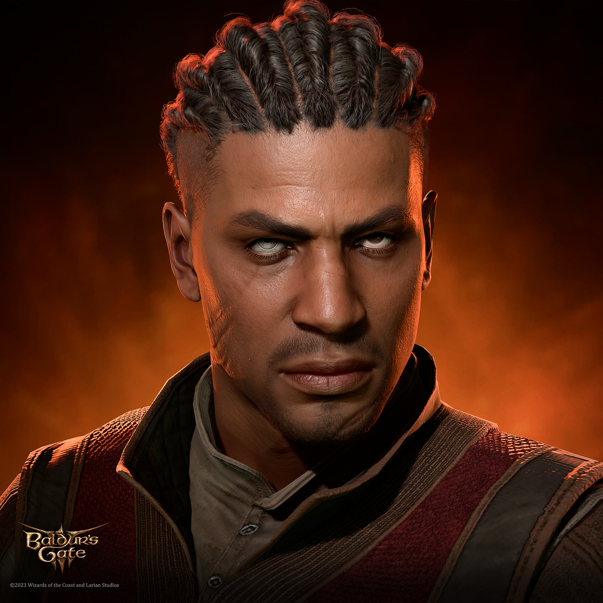
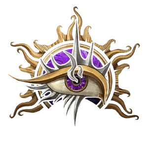

My Baldur's Gate 3 Character

Lara
Human
Humans are the most adaptable and ambitious people among the common races. Whatever drives them, humans are innovators, the achievers, and the pioneers of the world.
Bard
 An inspiring magician whose power echoes the music of creation
An inspiring magician whose power echoes the music of creation
Companion
Companions are playable characters who can join and fight alongside the player. Each has their own motivations, personalities, and affinity that increase or decrease according to the player's choices. At high approval levels, many companions can be romanced. Conversely, a companion may leave the party or even try to kill the player if their approval becomes too low.
Origin Companions
Origin companions are playable characters with rich backgrounds and ties to the world and the events of the game. Each Origin can be selected as a player character as an alternative to making a custom character. These origin companions can be recruited shortly after completing the Prologue.

Astarion
Elf
Elves are a magical people of otherworldly grace, living in the world but not entirely part of it.
Rogue
 A scoundrel who uses stealth and trickery to overcome obstacles and enemies
A scoundrel who uses stealth and trickery to overcome obstacles and enemies

Gale
Human
Humans are the most adaptable and ambitious people among the common races. Whatever drives them, humans are innovators, the achievers, and the pioneers of the world.
Wizard
A scholary magic-user capable of manipulating the structures of reality

Karlach
Tiefling
To be greeted with stares and whispers, to suffer violence and insult on the street, to mistrust and fear in every eye: this is the lot of the tiefling.
Barbarian
 A fierce warrior who can enter a battle rage
A fierce warrior who can enter a battle rage

Lae'zel
Githyanki
Githyanki complement their physical prowess with psionic might, instilled in them by mind flayers and cultivated over eons in the Astral Plane.
Fighter
A master of martial combat, skilled with a variety of weapons and armor
Shadowheart
Half-Elf
Half-elves combine what some say the best qualities of their elf and human parents.
Cleric
 A priestly champion who wields divine magic in service of a higher power
A priestly champion who wields divine magic in service of a higher power

Wyll
Human
Humans are the most adaptable and ambitious people among the common races. Whatever drives them, humans are innovators, the achievers, and the pioneers of the world.
Warlock

A wielder of magic that is derived from a bargain with an extraplanar entitiy